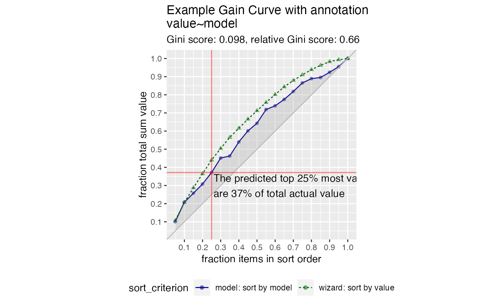

Plot the cumulative gain curve of a sort-order with extra notation
Source:R/GainCurve.R
GainCurvePlotWithNotation.RdPlot the cumulative gain curve of a sort-order with extra notation.
GainCurvePlotWithNotation( frame, xvar, truthVar, title, gainx, labelfun, ..., sort_by_model = TRUE, estimate_sig = FALSE, large_count = 1000, model_color = "darkblue", wizard_color = "darkgreen", shadow_color = "darkgray", crosshair_color = "red", text_color = "black" )
Arguments
| frame | data frame to get values from |
|---|---|
| xvar | name of the independent (input or model score) column in frame |
| truthVar | name of the dependent (output or result to be modeled) column in frame |
| title | title to place on plot |
| gainx | the point on the x axis corresponding to the desired label |
| labelfun | a function to return a label for the marked point |
| ... | no unnamed argument, added to force named binding of later arguments. |
| sort_by_model | logical, if TRUE use the model to calculate gainy, else use wizard. |
| estimate_sig | logical, if TRUE compute significance |
| large_count | numeric, upper bound target for number of plotting points |
| model_color | color for the model curve |
| wizard_color | color for the "wizard" (best possible) curve |
| shadow_color | color for the shaded area under the curve |
| crosshair_color | color for the annotation location lines |
| text_color | color for the annotation text |
Details
This is the standard gain curve plot (see GainCurvePlot) with
a label attached to a particular value of x. The label is created by
a function labelfun, which takes as inputs the x and y coordinates
of a label and returns a string (the label).
By default, uses the model to calculate the y value of the calculated point;
to use the wizard curve, set sort_by_model = FALSE
See also
Examples
set.seed(34903490) y = abs(rnorm(20)) + 0.1 x = abs(y + 0.5*rnorm(20)) frm = data.frame(model=x, value=y) gainx = 0.25 # get the predicted top 25% most valuable points as sorted by the model # make a function to calculate the label for the annotated point labelfun = function(gx, gy) { pctx = gx*100 pcty = gy*100 paste("The predicted top ", pctx, "% most valuable points by the model\n", "are ", pcty, "% of total actual value", sep='') } WVPlots::GainCurvePlotWithNotation(frm, "model", "value", title="Example Gain Curve with annotation", gainx=gainx,labelfun=labelfun)# now get the top 25% actual most valuable points labelfun = function(gx, gy) { pctx = gx*100 pcty = gy*100 paste("The actual top ", pctx, "% most valuable points\n", "are ", pcty, "% of total actual value", sep='') } WVPlots::GainCurvePlotWithNotation(frm, "model", "value", title="Example Gain Curve with annotation", gainx=gainx,labelfun=labelfun, sort_by_model=FALSE)